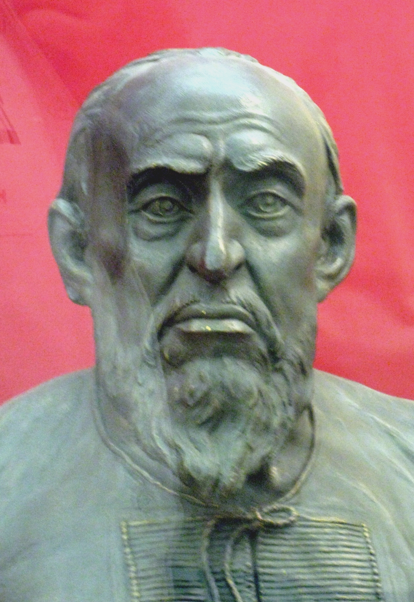

Russia

Dr. Christopher N. Lawrence
Middle Georgia State University
POLS 2301: Comparative Politics
Geography

Russia, officially known as the Russian Federation (Российская Федерация or Rossiyskaya Federatsiya), spans across the northern part of Asia and the easternmost portion of Europe. It is the largest country by area in the world, spanning 11 time zones.
However, most of Russia is thinly populated; most Russians live in the western and southwestern portions of the country.
Language and Writing
Like several other eastern European languages, Russian is written in an alphabet based on Greek known as Cyrillic, after Saint Cyril, who was responsible for converting many of the Slavs to Christianity.
Some letters are more-or-less the same as in the Latin alphabet used in English, while some are different; some Cyrillic letters have the same shapes as Latin letters but different meanings.
Culture and Religion
Russia and much of eastern Europe historically was under the influence of the Orthodox Church, which broke with the Roman Catholic Church in 1054 AD.
Under communism, society was heavily secularized; religious sentiment has recovered somewhat since the 1980s.
Early History
7th–9th centuries CE: Slavic tribes formed the Kievan Rus' in what is now western Russia, Belarus, and Ukraine.
Capital first at Novogorod, moved to Kiev (Ukraine) in 9th century.
Relatively stable until Mongol invasions and internal strife in the 13th century.
The Emergence of Moscow
Small states vied for influence under Mongol (Tatar) influence.
Muscovy (the principality of Moscow) gained influence and power as trusted agents of the Tatars.
Weakening of the Tatars led to Muscovy uniting neighboring states.
Most powerful early ruler was Ivan III: tripled the size of Muscovy; imposed absolute rule on his subjects.
Tsardom and the Romanovs
-

Ivan IV (Ivan the Terrible) first ruler to be called tsar (emperor).
Effective statesman and reformer, but ruthlessly dominated the Russian nobility.
After Ivan, Russia briefly ruled by the neighboring Polish-Lithuanian Commonwealth. Eventually the foreign rulers were driven out, and Russian self-rule restored in 1613.
New tsars formed the Romanov dynasty, who would continue to rule until 1917.
Absolutism and Expansion
- Absolutism expanded in Russia as it was in decline elsewhere
in Europe:
- Romanovs became increasingly autocratic over time.
- Serfdom expanded.
- Peter the Great (1682–1725)
- Inspired by Louis XIV of France.
- Expanded Russian territory, conquering neighboring territories and settling Siberia; Russia became world's biggest country.
- Sought to “Europeanize” Russia, founding new capital (Saint Petersburg) on the Baltic Sea.
19th Century Reform: Too Little, Too Late
Napoleon's armies—although ultimately defeated, thanks largely to the harsh Russian winter—made Russians aware just how far behind western Europe their country was. Russians were divided between those who wanted to emulate the West more closely and those who wanted to stand up for a unique, Slavic culture.
Meanwhile, the tsars rarely paid much heed to the need for political and economic reform. Although the serfs were nominally freed under Alexander II in 1861, peasant life was still brutal and other political reforms were lacking.
Anarchists and Communists
The lack of meaningful political reform led to radical movements emerging in Russia. Some intellectuals rejected the ideas of the state and traditional government entirely. Others favored a Marxist revolution to bring about a socialist state, but disagreed as to how they might make it come about.
The secret police within Russia were very effective in rooting out revolutionary groups across the spectrum, so many of these groups' leaders were forced into exile. One of these groups, the Russian Social Democratic Labor Party, would become critical in the decades to come.
Mensheviks and Bolsheviks
Two factions within the Russian SDLP:
Gradualists (Mensheviks): Russia not ready for socialism; needed to become capitalist first while improving conditions for peasants and workers.
Militants (Bolsheviks): Russia needed a direct transition from feudalism to socialism. Fused Marx's economic ideas with Lenin's political approach of democratic centralism.
The Russo-Japanese War
The expanding Russian empire in the east came into conflict with Japanese expansion into modern Korea and northern China (Manchuria). The Russians thought they could easily defeat Japan, but instead suffered a humiliating defeat.
Russians rose up in protest against the tsar, Nicholas II, who was forced to offer reforms, including elections to a national parliament, the Duma.
While this was a baby step toward mass democracy, Nicholas kept real power under his control by making ministers accountable to him, not the elected Duma. Few Russians were satisfied.
The February Revolution
In World War I, Russia was one of the allies that were arrayed against the Central Powers (Germany and Austria-Hungary). However, the war went very badly for Russia, whose armies again were proven inferior to those of their rivals.
In March 1917 (late February under the old Russian calendar), moderate politicians forced Nicholas II from power and established the Provisional Government under Alexander Kerensky, a social democrat. Kerensky, however, vowed to continue the war, an unpopular stance among the Russian people.
The October Revolution
The Germans hoped to get Russia out of the war by provoking continued unrest there; they gave Lenin and several other communists free passage through their territory to go to Russia and foment revolution.
The Provisional Government had control of the army, but the Bolsheviks organized the soviets—councils of workers, peasants, and soldiers—to undermine state power.
In late October on the old Russian calendar (early November), Lenin and the St. Petersburg soviet rose up and ousted the Provisional Government. They quickly sued for peace with Germany in the Treaty of Brest-Litvosk on terms very favorable to the Germans.
The Civil War and War Communism

Russian opponents of the Bolsheviks, and World War I allies who felt betrayed by Russia's withdrawal from the conflict with Germany, waged a civil war to stop the Bolsheviks from gaining control of the Russian Empire. The anti-communist “Whites” were eventually defeated by the “Reds,” but at a heavy cost.
At the same time the civil war raged, Lenin tried to implement a socialist economic system by nationalizing the entire economy. Ironically, only American charity saved the Russian people under war communism from mass starvation as the forced collectivization of agriculture failed miserably.
The New Economic Policy

Former Russian Empire reconstituted as the Union of Soviet Socialist Republics (USSR; Cyrillic: СССР); non-Russian territories taken over as republics within the USSR.
USSR theoretically a federation of states; in practice, Russians called the shots.
Failure of war communism led Lenin to adopt the New Economic Policy, limiting state control to heavy industry and returning most farming, light industry, and commerce to private ownership.
Death of Lenin in 1924 leaves a power vacuum.
Joseph Stalin (1926–53)

When Joseph Stalin consolidated power in 1926, he began a series of purges designed to eliminate the other early Bolshevik leaders along with other rivals. Estimates suggest over a million people were killed; millions more were imprisoned, exiled, or removed from government posts.
Stalin also initiated a program of dekulakization to bring agriculture under state control by killing hundreds of thousands of peasant farmers and their families. These policies caused a massive famine, leading to between 5 and 8 million deaths.
Stalin in World War II
Stalin and Hitler, despite being ideological opponents, secretly cooperated early in the war to divide Poland. On Stalin's orders, thousands of Poles were massacred by the Soviets, including both civilians and prisoners of war.
When Hitler turned on Stalin and invaded, the Soviet military was taken by complete surprise; it was also ill-equipped and weak due to Stalin's purges. The assault went well initially for the Germans, but the failure to capture Moscow and Leningrad quickly led to the Soviets being able to regroup in 1942 and turn the tide.
In total, 27 million Soviet citizens died during the war; over two-thirds were civilians.
Stalin After World War II
Most countries that had been liberated from the Germans by the USSR brought under communist rule 1945–49; most were part of the Warsaw Pact until 1989.
Stalin also promoted communism abroad, bolstered Chinese communists; helped establish North Korea and North Vietnam.
Inside USSR, fostered a cult of personality and emphasized Russian nationalism.
Died under suspicious circumstances in 1953.
Nikita Khrushchev (1954–64)

Internal party struggle eventually led to emergence of Nikita Khrushchev as new party leader.
Khrushchev pushed de-Stalinization, ending cult of personality; reduced repression within the USSR.
However, more confrontational abroad: suppressed uprising in Hungary; increased tensions with the U.S. leading to the Cuban Missile Crisis in 1962.
Deposed by the party leadership in 1964.
Leonid Brezhnev (1964–82)
Soviets lost the “space race,” tensions emerged with China, and economic issues and corruption became increasingly problematic.
In 1979, launched an invasion of Afghanistan to support the communist government in Kabul; the Russians were quickly bogged down in conflict with mujahideen guerrillas supported by the United States.
Brezhnev died in office in 1982, although real power had passed to several others in 1981 due to his ill health.
Andropov and Chernenko
Brezhnev was succeeded by two short-lived rulers, Yuri Andropov (1982–84) and Konstantin Chernenko (1984–85).
Andropov realized the depth of the problems facing the Soviet Union and began a program of reform and continued arms limitation talks with the West, but became seriously ill just months into his leadership.
Chernenko was already terminally ill when he became general secretary.
Mikhail Gorbachev (1985–91)
The last Soviet leader was Mikhail Gorbachev. Initially expected to continue Andropov's program of gradual reform, he eventually was forced by economic circumstances to introduce much more drastic changes (glasnost and perestroika).
Institutions Under Communism
Theory: the CPSU and the state were separate institutions.
Practice: CPSU dominated the state apparatus.
General Secretary (gensek) usually the ultimate authority, subject to being overruled by the Politburo.
State power vested in Supreme Soviet (legislature) and its executive committee, the Presidium.
Presidium members and key ministers were typically Politburo members. Chairman of the Presidium was technically the head of state.
Soviet Bureaucracy
Socialist system required massive bureaucracy to maintain and control the economy.
Positions in the bureaucracy controlled by CPSU using nomenklatura system; only people on the approved list could be appointed to important jobs.
Gosplan, the State Planning Committee, implemented the Five-Year Plans developed by the CPSU.
Without price signals of supply and demand, Gosplan unable to coordinate production effectively, particularly of consumer goods.
Chekists: The KGB
State security police were used to maintain the party and state's control.
Went by various names; in 1950s became the Committee on State Security, or the KGB.
Monitored private lives of citizens; punished and harassed dissidents. Most threatening dissidents might be sent to gulags, moved to “closed cities,” or institutionalized.
Successor agency in Russia known as the Federal Security Bureau (FSB).
Glasnost and Perestroika
By the 1980s, it was clear that the Eastern Bloc was unable to keep up with the West. The USSR was beset by widespread corruption and inefficiency, compounded by worsening public services and alcoholism.
Gorbachev concluded that the Soviet state needed fundamental restructuring (perestroika) and greater openness to criticism (glasnost). Private sector businesses were allowed again, and greater criticism of government and party policies was tolerated.
However, even at the end, Gorbachev wanted to preserve Marxism-Leninism and the USSR, at least in some form.
Unintended Consequences
The biggest unintended consequence of glasnost was the return of nationalism, not just in the USSR's republics but also in the Eastern Bloc. People under communist rule also became more aware of the better lifestyle most Westerners enjoyed and the full extent of Stalin's crimes.
Following Gorbachev's decision to allow the Warsaw Pact countries to democratize without Soviet intervention, nationalists in the Baltic and Caucasus republics agitated for independence from the Russian-dominated USSR.
The August Coup
When the CPSU's monopoly on power was removed by Gorbachev, nationalist parties won elections in several Soviet republics and moved toward independence. Meanwhile, reformist former Politburo member Boris Yeltsin became the leader of the Russian Supreme Soviet, increasing tension between the Russian and USSR governments.
The final death knell was the attempted coup against Gorbachev in August 1991. Although the coup failed and Gorbachev was reinstated as president, real power was now in the hands of Yeltsin, who had led to opposition to the coup in Moscow. The CPSU was dissolved and banned, and most of the republics declared independence.
Denouement
In December, the four republics that had not declared independence did so, effectively abolishing the USSR, and formed the Commonwealth of Independent States in its place.
With no republics left, Gorbachev bowed to the inevitable. With his resignation as president, the USSR was officially dissolved on December 25, 1991.
The Crisis of 1993

“Shock therapy” economics led to sharp decline in Yeltsin's approval, tensions with the Congress of People's Deputies (parliament).
Tensions boiled over in September 1993: Yeltsin tried to dissolve the parliament; CPD tried to impeach Yelstin for violating the constitution by dissolving parliament.
Interior ministry forces loyal to Yeltsin eventually stormed the parliament building (“White House”) after street fighting between pro-Yeltsin and pro-CPD forces.
A New Constitution

In the aftermath, a new Constitution was adopted, modeled on that of France, strengthening presidential power at the expense of the new Federal Assembly.
However, Yeltsin also got along poorly with the new legislature, and he was unable to continue many of his reforms.
Vladimir Putin Takes Power
Toward the end of his presidency, Yelstin appointed former KGB operative Vladimir Putin as his prime minister and handed increasing power over to him as his health continued to deteriorate.
When Yeltsin resigned from office on December 31, 1999, Putin took over as acting president until elections were held in 2000.
Formal Institutions Today
Russia has a semipresidential system similar to that of France: the president chooses a prime minister who is accountable to parliament.
Unlike in France, parliament's control over the cabinet is more limited. A censure (no confidence) vote only requires the president to act if a confidence motion is passed twice within three months; even then, the president can normally call for new elections to the Duma rather than dismissing the cabinet.
The President

Current president: Vladimir Putin, associated with the United Russia party.
Putin is in his third term as president; served two terms from 2000–08; elected to third term in 2012 with 63.6% of the vote.
If no candidate receives an absolute majority in the first ballot, a runoff between the top two candidates takes place (not common).
Until 2012, four-year term. Since 2012, term now six years. Limited to two consecutive terms.
The Prime Minister and Cabinet

The prime minister and cabinet, like in France, is appointed by the president.
The current prime minister is Dmitry Medvedev. He previously served as a cabinet member during Putin's first term in office, and was president from 2008–12.
In the event of the president's death or resignation from office, the prime minister becomes acting president until new elections are held within 90 days.
The State Duma

Russia's bicameral parliament officially known as the Federal Assembly.
The lower house is the 450-member State Duma.
Duma elected using a parallel voting system since 2016:
- 225 seats elected via proportional representation nation-wide from party lists (5% threshold).
- 225 seats elected from single-member districts by plurality (FPTP).
- Considered a semiproportional or mixed-member majoritarian system.
The Council of the Federation
- Upper house is the 170-member Council of the Federation.
- Two members from each of Russia's 85 federal subjects:
- One chosen by the legislature.
- One chosen by the governor.
- The president can appoint up to 17 additional members.
- In addition to considering legislation proposed by the Duma, the Council also approves presidential decrees of states-of-emergency and martial law and approves certain presidential nominations.
The Judiciary
Like in Germany and the United States, the Russian constitution establishes a Constitutional Court that can review the legality of government actions and laws.
However, the courts in Russia (including the Constitutional Court) are widely believed to lack genuine independence from political influence, particularly from the president. Putin's political opponents are frequently convicted of criminal activities, while those suspected of crimes against opposition figures and independent journalists are rarely brought to justice.
Political Parties in Russia
Four biggest parties in the State Duma:
United Russia is the ruling party, organized by Putin's supporters.
Unlike in most post-Communist countries, the Communist Party of Russia is still quite popular and has not “rebranded.”
LDPR (formerly the Liberal Democratic Party of Russia) is a nationalist party; it is not particularly liberal or democratic.
A Just Russia historically supported Putin and Medvedev too; now presents itself as a left-wing alternative.
Political Subdivisions
85 federal subjects of Russia, directly under the federal government:
- 22 republics (typically for minorities)
- 46 oblasts
- 9 krais
- 4 autonomous okrugs
- 3 federal cities: Moscow, St. Petersburg, Sevastapol [in Crimea]
- 1 autonomous oblast
Putinism in Practice
Most observers outside of Russia—and even some within it—think that even though Russia has the trappings of democracy, in practice it has an oligarchy or dictatorship headed by Vladimir Putin since the late 1990s.
There is some debate over whether the real source of power in the Kremlin during Medvedev's presidency was Medvedev himself or Putin. These questions were reinforced when Medvedev became Putin's prime minister in 2012.
The Near Abroad

Russia has attempted to maintain its influence in the areas formerly under the control of the Soviet Union, and particularly those with a large number of Russian speakers (either historically or imported under Soviet rule).
The Commonwealth of Independent States was established in 1991 as the successor of the Soviet Union; in practice, however, the CIS is more of a coordinating body than a supranational government. However, Russia—by dominating the CIS—can use it as an instrument to keep control over its neighbors.
Nostalgia for the Soviet Era
Many Russians have positive feelings about the old Soviet Union. The depth of the crimes of the Soviet era, particularly under Lenin and Stalin, is not emphasized, while the victory in the Great Patriotic War against Germany (WWII) is celebrated. If nothing else, the old Soviet Union was more orderly than post-USSR Russia has been.
The continued support of the Communist Party by a sizable part of the Russian population—at around 20%, much higher than anywhere else in Europe—reflects this nostalgia.
The Ukraine Crisis
Ukraine's pro-Russian president Viktor Yanukovych was ousted in a popular uprising in February 2014.
Crimea declared independence from Ukraine in March 2014; the next day, the “independent” Republic of Crimea was dissolved and annexed by Russia at its request.
Later in 2014, Kremlin-supported forces in the Donbass region in eastern Ukraine launched a rebellion aimed at either greater autonomy or becoming part of Russia.
Other Challenges
The economy: Russia's economy remains largely state-controlled and inefficient, with many businesses either owned by the state or by closely-connected oligarchs. Reforms, however, will be painful.
In theory, Russia has vast untapped mineral wealth in Siberia and the Arctic, but finding the investment to exploit these opportunities remains a challenge.
Internal dissent: Although Russians dominate, Russia is a multi-ethnic state. Tensions with minority populations, particularly in Chechnya and other Muslim-dominated areas, have led to terrorism and low-level conflict.
Will Russia Become Democratic?
Although Russia has the political institutions of a representative democracy, in practice it is subject to authoritarian rule. In many ways, this is similar to many American client states during the Cold War, like Taiwan, the Philippines, Indonesia, and South Korea.
Those countries eventually became democratic, so there is hope that democracy could also take root in Russia. Once Putin retires from the political scene, it's possible his successor will be more willing to democratize; observers suggested that Medvedev's presidency, for example, was more liberal than Putin's despite their close alliance.
Copyright and License
The text and narration of these slides are an original, creative work, Copyright © 2015–16 Christopher N. Lawrence. You may freely use, modify, and redistribute this slideshow under the terms of the Creative Commons Attribution-Share Alike 4.0 International license. To view a copy of this license, visit http://creativecommons.org/licenses/by-sa/4.0/ or send a letter to Creative Commons, 444 Castro Street, Suite 900, Mountain View, California, 94041, USA.
Other elements of these slides are either in the public domain (either originally or due to lapse in copyright), are U.S. government works not subject to copyright, or were licensed under the Creative Commons Attribution-Share Alike license (or a less restrictive license, the Creative Commons Attribution license) by their original creator.
Works Consulted
The following sources were consulted or used in the production of one or more of these slideshows, in addition to various primary source materials generally cited in-place or otherwise obvious from context throughout; previous editions of these works may have also been used. Any errors or omissions remain the sole responsibility of the author.
- Michael G. Roskin. 2013. Countries and Concepts: Politics, Geography, Culture, 12th ed. Upper Saddle River, New Jersey: Pearson.
- Various Wikimedia projects, including the Wikimedia Commons, Wikipedia, and Wikisource.